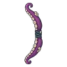

หนวดคราเคน
มอนธาตุน้ำ Lv 86–92
เจอที่
| แมพ | โซน | Lv | ภูมิภาค |
|---|---|---|---|
| เกาะสุสานเรือ | 86–92 | ที่ราบสูง | |
| เกาะสุสานเรือ | กองเรือซ้อนสูง | 91–92 | ที่ราบสูง |
ค่าสถานะตามเลเวล
| Lv | HP | ATK | DEF | MDEF | EXP | Job |
|---|---|---|---|---|---|---|
| 86 | 71,817 | 190–285 | 34 | 15 | 109 | 82 |
| 89 | 79,513 | 199–297 | 36 | 16 | 113 | 85 |
| 92 | 87,208 | 208–313 | 37 | 17 | 116 | 87 |
ตีด้วยธาตุไหนดี
แรงขึ้น: ลม ×1.75
เบาลง: ไฟ ×0.5 น้ำ ×0.25
วัตถุดิบที่ดรอป
| ของ | โอกาส | |
|---|---|---|
| ถ้วยดูดหนวดยักษ์ | 55% | 1 ชิ้น (15% ได้ 2) |
อุปกรณ์ที่ดรอป (1)
| ของ | โอกาส |
|---|---|
 ธนูหนวดคราเคน | 0.12% |
สกิล
ยิงไกล (Lv 25+) · ยิงไกล (Lv 60+) · พ่น (Lv 60+)